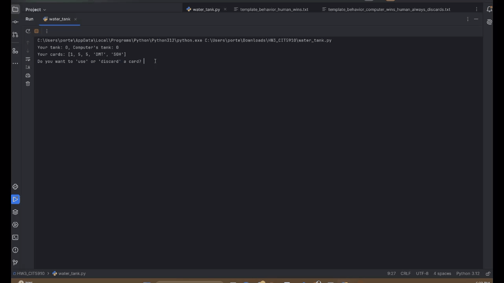

Python
Human vs Computer
A terminal card strategy game where you race the computer to fill your tank to 75–80 without spilling. Build with water cards (1/5/10) and play power cards—SOH (steal opponent’s half), DOT (drain opponent), DMT (double your tank)—while a simple heuristic guides the computer’s moves. Overflow “bounces” back if you overshoot 80, so timing your plays matters.
View ProjectDictonary & Word Count Patterns

Small, readable scripts that practice core dictionary patterns plus a simple word-frequency tool, with unit tests.
View Project